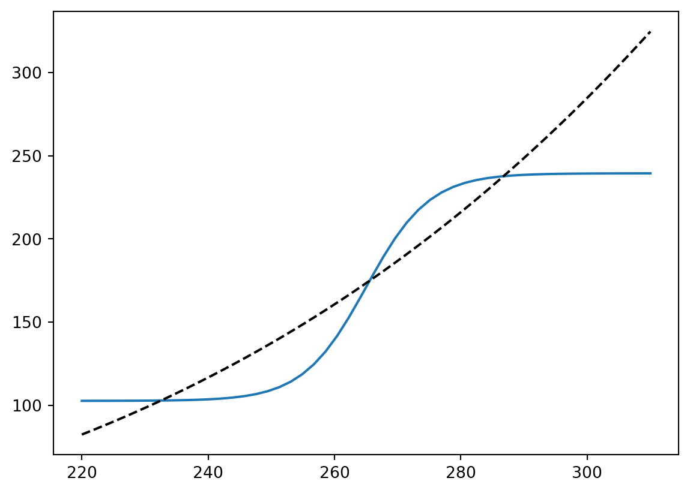
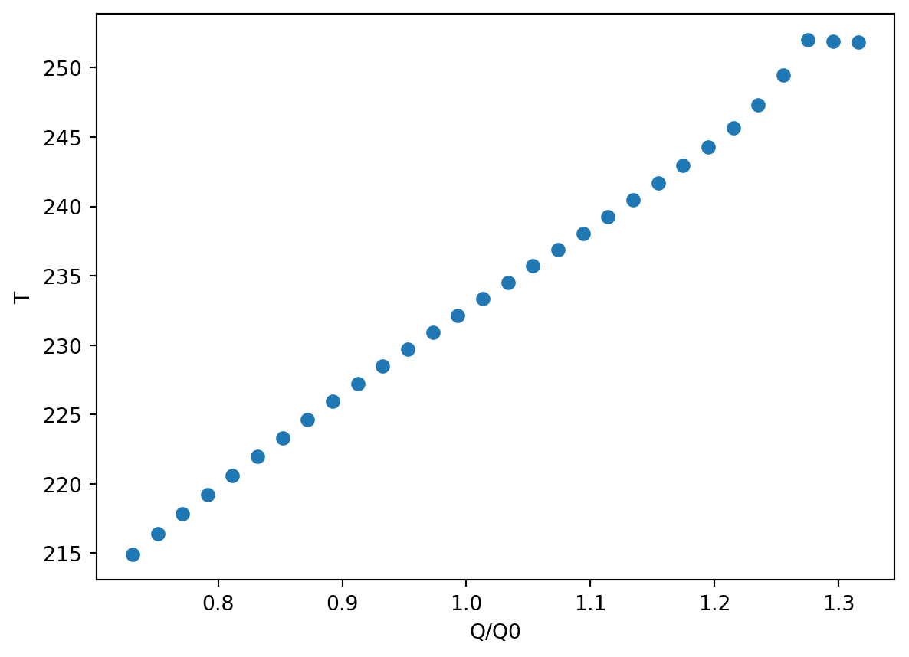
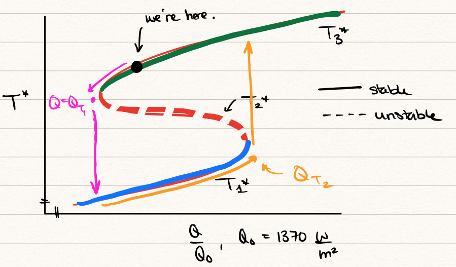

Recall that we previously introduced the basic energy balance model in Chapter 3. There, we derived the basic heat equation model (Equation 3.7) for the Earth’s temperature given by the following ordinary differential equation (ODE) for \(T = T(t)\), \[
C \frac{\mathrm{d}T}{\mathrm{d}t} = Q(1 - a) - \sigma \gamma T^4,
\tag{12.1}\] where we have defined \(C = \rho c_p d\) as the heat capacity of the atmosphere. Above, the solar flux, Q is often taken to be \(Q = 1370/4 = 342\) W/m2, \(\sigma = 5.67 \times 10^{-8}\) W/(m2K4), and \(\gamma \leq 1\) is the greenhouse gas factor.
In this chapter, we discuss some of the numerical and analytical tools at our disposal for studying the above equation.
12.1 Steady-state analysis
Previously, we have assumed that the planetary albedo, \(a\), is constant and independent of temperature. In actuality, water can turn to snow and ice and vice versa; since snow and ice have much higher albedo than open water, then we should consider \(a = a(T)\).
Let us assume that there are two relevant ranges to consider: T < 150K (cold) and T > 280K (hot). Let us assume that the albedo is, in these two regions: \[
a(T) \approx
\begin{cases}
0.7 & \mathrm{if }\ T < 150\mathrm{K}, \\
0.3 & \mathrm{if }\ T > 280\mathrm{K}.
\end{cases}
\] The above guarantees that more energy is reflected if temperatures are low. To model this process, we can use a ramp function to specify the albedo over all temperatures: \[
a(T) = A - B \mathrm{tanh}\left(k(T - 265)\right).
\tag{12.2}\] where \(A = 0.5\), \(B = {\color{blue}0.2}\), \(k = 0.1\), and \(T_0 = 265 \mathrm{K}\). Recall that the tanh function is given by \[
\mathrm{tanh}(x) = \frac{\mathrm{sinh}(x)}{\mathrm{cosh}(x)} = \frac{e^x - e^{-x}}{e^x + e^{-x}}.
\]
Let us further assume that the system is in steady state, so that the temperature is determined by solving the equation \[
f(T) = Q[1 - a(T)] - \sigma \gamma T^4 = 0.
\tag{12.3}\]
In the following code, we plot the two terms that make up \(f\), and their intersections indicate roots of \(f = 0\). We then use the Python ‘fsolve’ function to approximate the roots given initial guesses.
import numpy as npimport matplotlib.pyplot as pltimport scipy.optimize as scioptQ =342sigma =5.67e-8gamma =0.62TT = np.linspace(220,310,50)def fun(T): a =0.5-0.2*np.tanh((T -265)/10) x = (1-a)*Qreturn xLHS = fun(TT)plt.plot(TT, LHS)plt.plot(TT, gamma*sigma*TT**4, 'k--')def eq(T): x = fun(T) - gamma*sigma*T**4return xT1 = sciopt.fsolve(eq, 230)T2 = sciopt.fsolve(eq, 265)T3 = sciopt.fsolve(eq, 290)print("T1 = {:.2f}".format(T1[0]))print("T2 = {:.2f}".format(T2[0]))print("T3 = {:.2f}".format(T3[0]))
T1 = 232.55
T2 = 265.56
T3 = 286.74

Therefore multiple equilibria are observed.
12.2 Dynamics and phase line solutions
\(\nextSection\)
The full time-dependent model is given by \[
C \frac{\mathrm{d}T}{\mathrm{d}t} = f(T),
\] so we may use the positivity or negativity of \(f\) in order to sketch the time-dependent behaviour of the system.
To see this, we can perform an asymptotic analysis near the fixed points. Let the initial condition be considered near the fixed point: \[
T(t = 0) = T^* + \delta,
\] where \(\delta \ll 1\). Then we expand the solution into an asymptotic expansion, \[
T(t) = T^* + \delta T_1(t) + \delta T^2(t) + \ldots
\] Substitution into the above ODE gives, at \(O(\delta)\), \[
C \frac{\mathrm{d}T_1}{\mathrm{d}t} = f'(T_0) T_1,
\] and hence, with \(T_1(0) = 1\), we have \[
T_1(t) = e^{f'(T_0) t/C}.
\] Therefore, depending on the positivity or negativity of the gradient function, the perturbation will either decay or grow as \(t\to\infty\).
It can then be verified that the centre equilbria is unstable while the other two are stable. The higher temperature corresponds to the one that the Earth is currently in, but according to this model, there seems to be the possibility of a colder climate (50 degrees colder) where the Earth is entirely covered with snow and ice.
Interestingly, there is some evidence that the Earth’s climate may have been in this so-called state up to four times between 750 million and 580 million years ago (Neoproterozoic age). Observations of geological deposits suggest that the Earth has undergone periods of complete global glaciation where there have been very minimal biological activity. During this period, there is a massive build-up of CO2 in the atmopshere, leading to huge greenhouse effect. As \(\gamma\) decreases in our model, the equilibrium can then shift, suddenly transitioning the Planet into the warm state.
12.3 Numerical continuation of the steady states
\(\nextSection\)
We have done a preliminary steady-state analysis of \[
Q (1 - a(T)) - \sigma \gamma T^4,
\] but we would like to better understand how these steady-states may change depending on the parameters. For example, we would like to understand how the solutions vary of the solar constant related to \(Q\) varies; or we would like to understand how solutions vary as \(\gamma\) varies.
More specifically, we would like to design some numerical routines that would allow us to (smartly!) solve for the roots of the above equation as the parameters are varied. Although the above problem (roots of a single equation) is simple enough to do this in a manual way, the methods of numerical continuation we learn in this chapter is applicable to much more general set of problems.
Suppose that we are interested in studying how the steady-states (up to three) change as \(Q\) changes. Then we are interested in producing a diagram of \(Q\) vs. \(T\). The basic idea is to start with an initial solution at some value of \(Q\), increment \(Q\), then solve for the next value using the previous value as a guess. This involves the following pseudocode:
Numerical continuation
1. Input guess T0, f, df, parameter Q1
a. Call Newton's method via Newton(f, df, T0, Q1)
b. Obtain a preliminary solution (T1, Q1)
2. Increment Q1 = Q1 + dQ
a. Call Newton's method via Newton(f, df, T1, Q1)
b. Obtain a new solution (T1, Q1)
3. Repeat 2 until we reach a desired Q value
The following code provides continuation for one of the roots.
import numpy as npimport matplotlib.pyplot as pltfrom scipy.optimize import fsolvefrom scipy.optimize import rootsigma =5.67e-8gamma =0.62a =lambda T: 0.5-0.2*np.tanh((T -265)/10)Q0 =342Qmat = np.linspace(250, 450, 30)Tmat =0*Qmat# Initial guessx =220for i, Q inenumerate(Qmat): f =lambda T: Q*(1-a(T)) - sigma*gamma*T**4 sol = root(f, x)# If solution not found, output errorif sol.success !=1:print("Q/Q0 = ", Q/Q0, ": ", sol.message) Tmat[i] = sol.xplt.plot(Qmat/Q0, Tmat, 'o');plt.xlabel('Q/Q0');plt.ylabel('T');
Q/Q0 = 1.2754587618471467 : The iteration is not making good progress, as measured by the
improvement from the last ten iterations.
Q/Q0 = 1.2956241177656787 : The iteration is not making good progress, as measured by the
improvement from the last ten iterations.
Q/Q0 = 1.3157894736842106 : The iteration is not making good progress, as measured by the
improvement from the last five Jacobian evaluations.
/var/folders/26/pd267j_136sfv9lw7lc9rcm40000gp/T/ipykernel_96143/2481211673.py:22: DeprecationWarning: Conversion of an array with ndim > 0 to a scalar is deprecated, and will error in future. Ensure you extract a single element from your array before performing this operation. (Deprecated NumPy 1.25.)
Tmat[i] = sol.x

Above, we have scaled \(Q\) with the reference value of \(Q_0 = 342\).
In your lecture, problem class, or exercises, you will design continuation on the other branches of solutions, and then study the result and its implications. During the lecture, we studied MA30287/notebooks/lecture13_EBM.ipynb which can be found at this link.
12.4 Bifurcation diagram
\(\nextSection\)
In reference to the above note, the following diagram was drawn and discussed in Lecture 15.

Figure 12.1: Bifurcation diagram of \(Q/Q_0\) vs \(T^*\)
We noted the following:
The system has three steady states, given by the green, red, and blue curves.
The middle state is unstable (shown dashed).
The system exhibits hysteresis. Note that if we decrease \(Q/Q_0\) past the tipping point, marked \(Q_{T1}\) in the image, then we would evolve to the lower stable steady state (which is the ice state). However, while we are in the ice stated, if we were to attempt to increase the solar radiation to return to the green branch, we would need to arrive at \(Q_{T2}\) to do so; this irreversibility is known as hysteresis.
12.5 Re-scaling and Budyko’s model
\(\nextSection\)
To model the outgoing radiation, we use the quartic Stefan-Boltzmann law. However, over the range of temperatures we are interested-in, it seems that a simpler approximation is sufficient. In your homework, you will investigate the re-scaling and shifting of temperature, such that \[
T = T_0 + [T]\tilde{T},
\] where \(T_0 = 265 \mathrm{K}\). Then under the assumption that temperatures are not-so-far from \(T_0\), we expand \[
(T_0 + [T]\tilde{T})^4 \sim T_0^4 + 4 T_0^3 [T] \tilde{T} =
C_1 + C_2 \tilde{T}.
\] This simplifies the model considerably.